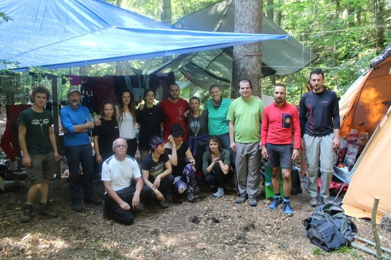

Novosti iz jame Nedam
Naramak friških vijesti sa ekspedicije na Sj. Velebitu :)

Vijesti i fotke: ekipa iz logora Ekspedicija je u punom jeku, a u Nedam se radi neprekidno. Evo nekoliko novosti kako su pristizale sa Velebita;
29-30. srpnja, istraživačka ekipa dosegnula dubinu od cca -1250 m, na kojoj ih je zaustavio sifon. Sifon je 20-ak metara više od dna. Prema planovima zaron bi trebale napraviti dvije curke - Petra Kovač Konrad i Jenny Barnjak.
Na -600 metara prečkalo se u novu paralelnu vertikalu, ali je ona stala nakon 20 metara. Na -300 metara u "Staklarni" proširilo se štemanjem, ide dalje i (opet) usko.
30.-31. srpnja, srpnja predsjednik Izvršnog odbora HPS-a prof. dr. sc. Darko Grundler, član Izvršnog odbora HPS-a Vladimir Novak i glavni tajnik HPS-a Alan Čaplar posjetili su speleološke logore na Velebitu te izrazili potporu speleolozima u istraživanjima koja provode u okviru Komisije za speleologiju HPS-a. Najveća istraživanja ove godine odvijaju se na Hajdučkim kukovima i na Crnopcu. Istraživanja se provode u sklopu projekta Istraživanje hrvatskog krša Komisije za speleologiju HPS-a. [caption id="attachment_4047" align="alignnone" width="800"] Delegacija HPS na velebitaškom logoru[/caption]02. kolovoza, Jenny Barnjak preronjava sifon. Dužina ovog visećeg sifona je 30 metara sa najvećom dubinom 6 metara. Iza sifona jama se nastavlja suhim kanalom.
[caption id="attachment_4048" align="alignnone" width="641"] Viseći sifon u Nedam na cca -1250m (dužina 30m, dubina 6m)[/caption]Na trenutnom dnu Marko Rakovac ispenjao iznad najniže točke, no dalje nije prolazno. Trenutne vremenske (ne)prilike malo otežavaju rad i istraživanja, no nastavit će se čim se vrijeme popravi. --------------------------------------------------------------------------------------------------------------------------------- 05. kolovoza 2020. Evo i nekoliko fotki zarona koji je izvela Jenny, kao i radna skica profila sifona u jami Nedam.
[gallery ids="4055,4054,4053,4052" type="rectangular"]06. kolovoza Prema info sa logora, Jenny je iza sifona po suhom kanalu prošla 30-ak metara, nastavlja se barem još toliko. Istraživanje iza sifona nastaviti će se najvjerojatnije iduće godine, a u međuvremenu užeta će se podići na sigurno od vode. Zbog obilnih padalina počela se podizati voda u jezeru u bivku na -600 metara pa je ekipa na odmoru morala spremati cijeli bivak na sigurno te se evakuirati na prvi bivak na -300 metara. [caption id="attachment_4057" align="alignnone" width="960"] Pozdrav svim Velebitašima od ekipe za transport i uron.[/caption] Obzirom na trenutne funkcije ekipe sa gornje fotke (pročelničke i dopročelničke), sifon u Nedam je dobio radno ime "Pročelnički sifon". Slažete li se sa time? :) --------------------------------------------------------------------------------------------------------------------------------------- I na kraju svega... Nedam se sa 70-og mjesta najdubljih jama na svijetu popela na 44. Iza sifona ide dalje. U Meandru introspekcije nastavilo se širiti i stalo pred oknom na -560 metara gdje se osjeti strujanje zraka. Potrebno je još dosta robovskog rada na proširivanju :). Na samom kraju ekspedicije, došlo je do ozlijede jednog speleologa. Malo je kasnio za ekipom i ostao sam u horizontalon kanalu na -100 metara kada se spotaknuo i ozlijedio nogu. Kako nije uspio uspostaviti kontakt sa logorom, ispenjao je van, gdje se spotaknuo i drugi put (jer je Fata -Fata a dvaput je dvaput) i dodatno se ozlijedio, odnosno slomio kost skočnog zgloba. Uspio je kontaktirati logor, a dežurna ekipa i nazočni GSS-ovci organizirali su saniranje ozlijede i transport. Nakon par dana bolničkog liječenja i postavljenih pločica na tibiji i fibuli, 'Srećko' se već vratio doma, a pouke su, nadamo se, izvučene. Od ostalih rezultata ekspedicije, otkriveno je 70 objekata, od toga dvije jame dublje od 100 metara i 6 dubljih od 50. Iz Nedam uzeti su geološki uzorci, u izradi je i geološki profil, a provedena su i biospeleološka istraživanja. -------------------------------------------------------------------------------------------------------------------------------------- Hej, haj Velebit, glavno da sam sit.